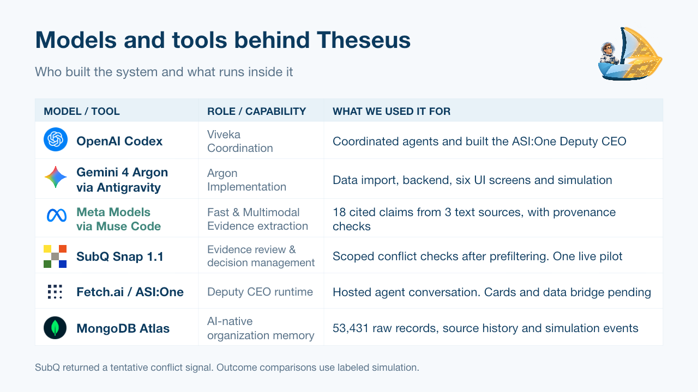

Theseus Control Plane
Your AI-native organization changes
every hour.
How do you notice it's no longer what you intended?
localhost · theseus / commit
S01 · Commit
Goals, principles, culture to protect
screen capture goes here
Theseus starts with a commitment: your goals, your principles, and the culture to protect.
localhost · theseus / observe / culture
S02 · Culture
What agents and people actually do
screen capture goes here
It watches what agents and people actually do.
localhost · theseus / observe / drift
S03 · Drift
Committed principle vs. behavior
screen capture goes here
And shows you where behavior drifts from what you committed to.
localhost · theseus / decide / proposal
S04 · Correction
Agents · People · Environment
screen capture goes here
It proposes one fix on three levels: agent rules, people's onboarding, and the environment itself.
localhost · theseus / decide / apply
S05 · Decision
Approve · check · apply
screen capture goes here
You approve. Checks run. The new rule applies.
localhost · theseus / track
S06 · Outcome · simulation
Did the change actually work?
screen capture goes here
Then it tracks whether the change actually worked.
Let AI employees improve your company.
Keep your goals, rules, and culture.
Theseus Control Plane
